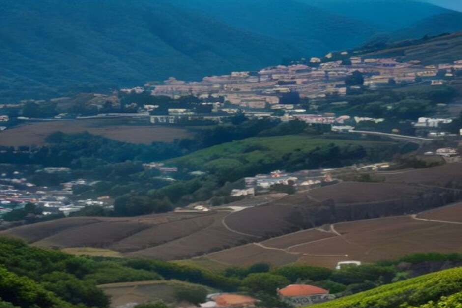
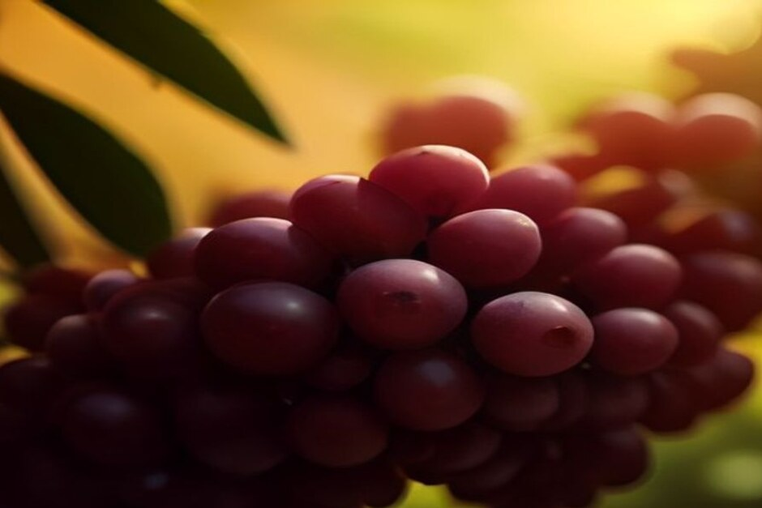

La fête du vin de Madère 2026 s'est tenue du 23 août au 13 septembre, avec un temps fort : le week-end des vendanges à Estreito de Câmara de Lobos, du 10 au 13 septembre. Vous cherchez ce qui se passait, comment y aller depuis Funchal, ou ce qu'il reste à faire le 14 septembre ? Tout est ici.
Fête du vin de Madère 2026 : l'essentiel en quelques lignes
- Dates : du 23 août au 13 septembre 2026.
- Temps fort : le week-end des vendanges à Estreito de Câmara de Lobos, du 10 au 13 septembre. Le samedi 12 septembre concentrait le programme le plus riche.
- Prix : l'entrée aux festivités d'Estreito, au Wine Lounge de Funchal et aux spectacles de folklore est gratuite. Seuls les stands de nourriture et de boissons sont payants.
- Pour participer : le foulage se fait pieds nus, et les visiteurs sont les bienvenus dans les lagares.
Le 14 septembre : la fête est finie, la région viticole reste
Beaucoup de lecteurs tapent « le 14 septembre » en espérant arriver à temps. Soyons clairs : le programme de 2026 s'arrêtait le 13 septembre, avec la clôture du Wine Lounge et du week-end d'Estreito. Le 14, il n'y a plus d'animation de la fête.
Le paysage, lui, n'a pas bougé. Les terrasses de vignes au-dessus de Câmara de Lobos sont toujours là, et on peut les regarder, ainsi que le village de pêcheurs en contrebas, tout au long de l'année. Plus bas dans cet article, vous trouverez une façon de le faire depuis la mer.
Pour l'édition suivante, les dates ne sont pas annoncées à l'heure où nous écrivons. Le plus sûr est de consulter le programme officiel quelques semaines avant votre voyage, et de ne pas réserver vos vols autour d'une date supposée.
Comment se déroulait la fête, en deux temps
La fête du vin, ou Festa do Vinho da Madeira, célèbre chaque année les vendanges de l'île. Elle mêle folklore, dégustations, concerts et, au centre, une reconstitution du foulage du raisin tel qu'on le pratiquait pendant des siècles, avant l'arrivée des pressoirs mécaniques.
Le programme se partageait en deux ambiances. À Funchal, c'était plus tranquille : dégustations et concerts. Dans les vignes d'Estreito de Câmara de Lobos, c'était plus vivant et plus participatif.

Le calendrier 2026, du début à la clôture
- 23 au 27 août : Semaine du Folklore Européen, qui ouvrait le festival avec des groupes de danse et de musique venus de tout le continent.
- 27 août au 13 septembre : Madeira Wine Lounge à la Praça do Povo, à Funchal, avec vin de Madère, gastronomie locale et musique live le soir.
- 5, 6, 12 et 13 septembre : Concerts dans les Vignes, donnés dans les terrasses elles-mêmes plutôt que dans une salle.
- 10 au 13 septembre : festivités des vendanges à Estreito de Câmara de Lobos.
Si vous deviez ne choisir qu'un moment, c'était le week-end d'Estreito. C'est là que la fête devient autre chose qu'un programme de concerts.
Le foulage du raisin à Estreito de Câmara de Lobos
Le village se trouve dans les vignobles en terrasses au-dessus de Câmara de Lobos, là où une grande partie du raisin de l'île est encore cultivée. Le 12 septembre, le déroulé était le suivant :
- 10:00 : vendange en direct.
- 11:00 : défilé folklorique en costume traditionnel, qui reconstitue la récolte à l'ancienne.
- Ensuite : foulage du raisin dans des lagares en bois, pieds nus, en musique.
Des stands de nourriture et de vin local restaient installés dans le village pendant tout le week-end.
Peut-on vraiment fouler le raisin soi-même ?
Oui. Un lagar est une cuve en bois peu profonde dans laquelle on presse le raisin avec les pieds. La méthode est aujourd'hui remplacée par des pressoirs mécaniques dans la production, mais elle est encore montrée chaque année. À Estreito, les visiteurs retroussent leur pantalon et se joignent aux habitants. C'est l'une des rares fêtes de Madère où l'on peut faire autre chose que regarder.
Prévoyez des vêtements qui vous laissent les jambes libres, une serviette et des chaussures faciles à enlever.
Venir de Funchal : bus ou voiture
Les bus Rodoeste 3, 7 et 96 partent du dépôt de la compagnie, sur l'Avenida do Mar à Funchal, vers Câmara de Lobos. De là, une courte correspondance locale monte jusqu'à Estreito de Câmara de Lobos, où se déroule le foulage.
En voiture, c'est simple aussi, mais le stationnement se complique pendant le week-end des vendanges. Le 12 septembre, arriver avant midi donnait les meilleures chances de trouver une place. Pour les autres conseils de terrain, la page infos pratiques est utile.

Croisière vendanges : voir les vignes depuis la mer
Précisons d'emblée : Chifbay ne propose pas de « croisière vendanges » en tant que telle, et aucune sortie ne passe par Estreito, qui est dans les hauteurs. Ce que nous proposons, c'est de longer depuis l'eau la côte qui domine ces vignobles.
Câmara de Lobos, le village de pêcheurs situé juste sous les terrasses d'Estreito, est la première escale de nos sorties en bateau privé au départ de Funchal. Vous voyez le même paysage que celui des vendanges, mais côté mer.
Le bateau est à votre groupe seul, jusqu'à 5 personnes, avec deux skippers autorisés originaires de Madère. Le point de rendez-vous est à la Marina do Funchal, ponton C. Les prix sont ceux du bateau entier, jamais par personne.
Quelle sortie pour longer la côte des vignes ?
- La sortie à la journée : départ à 10:00 ou 14:00. 2 h 30 jusqu'à Ribeira Brava pour 500 EUR, ou 3 h jusqu'à Ponta do Sol pour 600 EUR. Au programme : Câmara de Lobos, Cabo Girão, puis une baignade et des paddles à la Fajã dos Padres.
- La sortie coucher de soleil : départ 1 h 15 avant le coucher du soleil, toute l'année. 2 h jusqu'à Cabo Girão pour 400 EUR, ou 2 h 30 jusqu'à Ribeira Brava pour 500 EUR. Sans arrêt baignade.
Toutes les sorties incluent repas et boissons à bord, une vidéo 360° Insta360, des images de drone si la météo le permet et des photos prises avec un vrai appareil. L'annulation est gratuite jusqu'à 24 heures avant le départ. Pour comparer les options, voyez notre sélection des meilleures sorties en bateau à Madère ou le détail de la sortie en bateau privé.
Un conseil d'organisation, valable pour la fête comme pour une autre année : mer le matin, vignes l'après-midi. Une sortie à 10:00, puis le bus vers les hauteurs. Les dauphins, la lumière ou le beau temps ne se promettent pas, ils sont un cadeau quand ils sont là.
Le vin se presse encore comme il y a des siècles. La vue sur les vignes depuis la mer, elle non plus, n'a guère changé.
Comment la fête se compare à une autre sortie dans la région
La fête du vin est gratuite, participative et très locale. Son défaut, pour un voyageur de passage, est de dépendre d'un calendrier précis. Si vos dates ne tombent pas dans la fenêtre de fin d'été, vous pouvez quand même associer village de pêcheurs, falaise de Cabo Girão et vignes en terrasses, en bateau et à terre. Il suffit d'adapter la journée à votre séjour : voyez la page Chifbay pour réserver.
En résumé : la fête du vin de Madère 2026 est terminée, mais son décor est ouvert toute l'année. Pour la prochaine, surveillez le programme officiel, et gardez en tête le week-end d'Estreito comme moment à ne pas manquer.